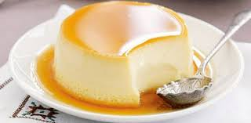

Крем-карамель
Потрясающий десерт! Нежный, ароматный, очень вкусный! Похож на крем-брюле, но нежнее, и готовится проще. Вместо маленьких формочек можно использовать одну большую форму, готовый десерт нарезать на порции. Сливки можно не использовать (использовать только 300 мл молока), но с ними получается нежнее. Обязательно побалуйте своих родных этим десертом! Из указанного количества ингредиентов получается 4–5 порций.
Ингридиенты:

карамель:
150 г сахара
50 мл воды (кипятка)
крем:
100 мл сливок 33%
300 мл молока
1 яйцо + 2 желтка
100 г сахара
ванильная палочка (или 2 ч.л. ванильного сахара)
сливочное масло (для смазывания формочек)
Приготовление
Формочки смазать сливочным маслом.
Сахар высыпать в кастрюльку (ковш), поставить на огонь.
Нагревать до растворения сахара.
Добавить 50 мл кипятка, перемешать.
Готовую карамель разлить в формочки (наливать 0.5–1 см).
Молоко и сливки смешать, поставить на огонь, добавить палочку ванили (или ванильный сахар).
Довести до кипения, но не кипятить.
Палочку ванили вынуть.
Яйца перемешать с сахаром.
В яйца с сахаром тонкой струйкой влить молоко со сливками, перемешать.
Сливочную массу разлить в формочки, поверх карамели.
Формочки поставить в форму для запекания.
Налить горячую воду так, чтобы она доходила до середины формочек.
Поставить в духовку.
Запекать при температуре 160 градусов в течение 40–45 минут.
Остудить, поставить в холодильник на 4–6 часов.
Готовый десерт перевернуть на тарелки.